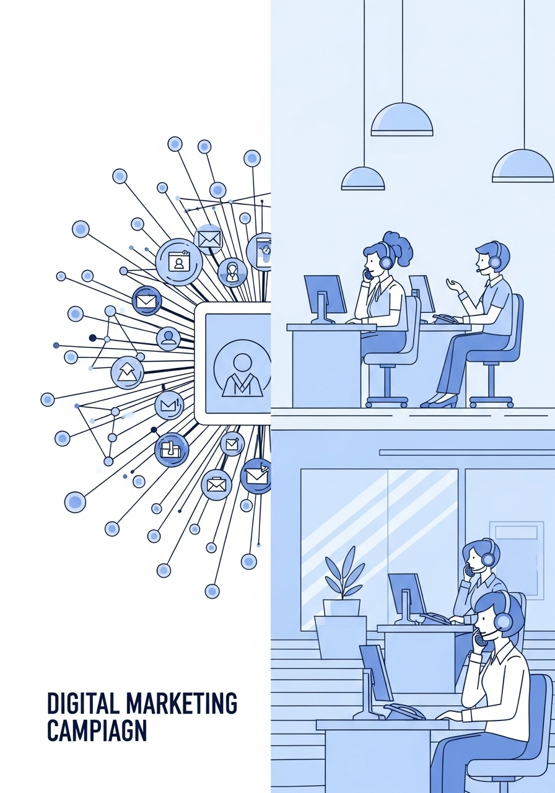

intelligence-core - erp - sistar crm
sistar crm
"SISTAR CRM — Full-lifecycle B2B & B2C Customer Relationship Management integrated natively into Qubit ERP for automated lead scoring, proposal dispatch, and sleeping-account reactivation."
▫️ AI-Native Pipeline Orchestration & Partner Lifecycle Control
SISTAR CRM is engineered as the commercial brain of Qubit ERP—turning fragmented buyer contacts into predictable, recurring container and subscription revenue:
- • Automated Target Listing & Segmentation: Ingests verified B2B distributor, veterinary clinic, salon, and retail leads from our overnight Data Factory, scoring accounts by regional demand, credit tier, and product affinity.
- • 5-Step Commercial Workflow Integration: Directly executes our standardized pipeline—Strategy → List Targets → Proposal Packages → Proposal / Deal → Mgnt.AI—generating customized SPIN and Account-Based Selling offer sheets automatically.
- • Anti-Churn & 3-Month Sleeping Account Reactivation: AI continuously monitors re-order intervals across all accounts, dispatching automated 2nd-order reminders, seasonal bundle promotions, and sleeping-buyer win-back sequences.

▫️ Quantized Credit Monitoring & Multilateral Overdue Offsetting
Unlike conventional CRMs that stop at sales logging, SISTAR CRM is deeply entangled with our financial and logistics engines:
- • Discrete Credit Tier Management (, E_2, E_3$): Tracks partner payment fidelity and 3-month Rolling Purchasing Forecasts (RPF) to govern Open Account credit limits and K-SURE BNPL trade financing eligibility.
- • Overdue Collection & Dead-Stock Offsetting: Resolves partner liquidity bottlenecks without friction by triggering Qubit Bank inventory swaps, promotional clearance campaigns, and structured installment plans.

▫️ Detailed Archive: SISTAR CRM
Comprehensive operational records, strategic frameworks, and source specifications preserved from SISTAR CRM:
- • The Art and Science of Customer Relationship Management - SISTAR
- • Building lasting bonds with customers through strategic management of interactions and data-driven insights.
- • SISTAR Customer Relation Management
- • CRM is a business strategy focused on understanding and meeting customer needs. It's a comprehensive approach, not just a technological tool.
- • It means prioritizing customers in all business activities, from product development and marketing to post-purchase support and service.
- • The main goal is to make customers happier, more loyal, and keep them longer, which helps the business grow and make more money.
- • Core Concepts of SISTAR CRM
- • Customer Understanding
- • Gaining deep insights into customer behaviors, preferences, and needs is fundamental to effective CRM.
- • Prioritizing customer needs in all business decisions helps build strong, lasting relationships.
- • Utilizing customer information to gain actionable insights and personalize every interaction.
- • Enhancing customer interactions by making workflows smoother and more efficient for better experiences.
- • Cross-Functional Teamwork
- • Ensuring all departments collaborate effectively to provide a cohesive and unified customer experience.
- • SISTAR CRM Systems: Key Features
- • Unified Customer Information
- • Consolidate all customer details in one place for a complete and holistic view of each relationship.
- • Integrated Sales & Marketing Tools
- • Streamline lead management, track sales progress, and automate marketing campaigns for efficiency.
- • Efficient Customer Support
- • Manage customer questions and support requests swiftly to deliver personalized and effective service.
- • Types of SISTAR CRM Systems
- • Automates daily tasks across sales, marketing, and customer service, streamlining interactions and processes.
- • Analyzes customer data to uncover trends, predict future behavior, and inform strategic business decisions.
- • Facilitates seamless information sharing among different internal departments and external partners to enhance customer experience.
- • Benefits of Effective SISTAR CRM
- • Enhanced customer retention through personalized interactions
- • Increased sales with streamlined processes and lead prioritization
- • Improved customer satisfaction via consistent service
- • Greater operational efficiency through automation
- • Better strategic decision-making with data-driven insights
- • Inbound vs. Outbound Sales Strategies
- • This approach uses helpful content and resources to naturally draw customers to you, instead of you reaching out to them.
- • This involves actively contacting potential customers, often through cold calls, email blasts, or direct mail.
- • Value-Based & Consultative Selling
- • Shows how a product truly helps customers, focusing on results and what they'll gain, not just its parts.
- • Makes the salesperson a trusted advisor who listens to customers and offers solutions just for them.
- • Both approaches focus on what the customer needs more than what the product has. This builds stronger relationships and trust.
- • Solution & Account-Based Selling
- • Discover Customer Problems
- • Solution selling helps identify the specific problems and challenges customers are facing.
- • Provide Tailored Solutions
- • This approach then offers customized solutions designed precisely for those identified problems.
- • Engage Key Accounts Strategically
- • Account-based selling focuses on high-value customers with highly personalized, one-on-one engagement.
- • SPIN & Social Selling Techniques
- • This method uses a structured questioning technique (Situation, Problem, Implication, Need-Payoff) to deeply understand customer needs and guide them towards effective solutions.
- • Leveraging social media platforms to connect with potential customers, build valuable relationships, and share useful content to foster trust and engagement.
- • Essential Sales Pipeline Strategies
- • Set up a clear plan for how potential customers move through each stage of your sales process, ensuring a smooth journey from lead to conversion.
- • Identify and prioritize potential customers most likely to convert, allowing your sales team to focus efforts where they will be most effective.
- • Start Referral Programs
- • Encourage satisfied customers to recommend new ones, leveraging their positive experiences to drive organic growth and expand your customer base.
- • Improve Sales with Data
- • Analyze Past Performance
- • Utilize historical data to identify successful strategies and optimize future sales efforts.
- • Equip your sales team with the skills to effectively leverage CRM systems and data for better outcomes.
- • Personalization & Follow-Up
- • Personalized Experience
- • Craft a unique approach for each customer, leveraging insights from their needs, preferences, and past interactions to deliver a truly customized experience.
- • Maintain regular contact throughout the sales process, building trust and demonstrating reliability by consistently engaging with customers at every stage.
- • These actions show you care about each customer as a person, not just a sale.
- • SISTAR CRM Implementation Strategy
- • Set clear, measurable goals for what you want your CRM system to achieve.
- • Gather all customer information into a unified, central repository for easy access.
- • Team Adoption & Training
- • Ensure your team is well-trained and actively uses the new CRM system for consistent results.
- • Continuously track performance metrics to assess the CRM's effectiveness and make necessary adjustments.
- • Practical SISTAR CRM Action Steps
- • Gather Stakeholder Input
- • Talk to your sales, marketing, and support teams to understand their needs and expectations for the CRM.
- • Automate Key Processes
- • Leverage the CRM to automate repetitive tasks, making workflows smoother and significantly faster.
- • Integrate With Other Tools
- • Link your CRM with essential tools like email, accounting, and your website for effortless information flow and unified operations.
- • Remember, CRM isn't a one-time setup. Keep checking and improving it to get the most benefit.
- • Key to Customer Retention
- • Keeping existing customers is more cost-effective than acquiring new ones. Here are simple strategies to prevent customer churn, grouped by approach:
- • Find Out Why Customers Leave
- • Understanding the reasons behind customer departures is crucial for effective retention.
- • Proactive engagement and support can prevent issues before they escalate, improving customer loyalty.
- • Empowering customers through continuous learning and fostering a sense of community builds strong, lasting relationships.
- • Give Great Service & Reward Loyalty
- • Exceptional service combined with recognition for loyal customers ensures they feel valued and stay with your brand.